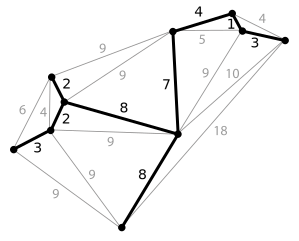
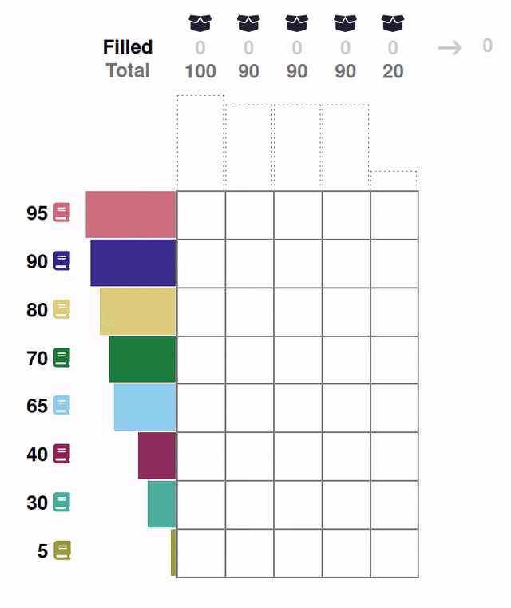

Assessing Human Interpretability of Machine-Generated Solutions to Combinatorial Design Problems
D. Pegler, D. Steyrl, F. Scharnowski, & F. Melinscak
Problem Setting
Machine Problem-Solving
- Increasingly taking over human domains
- AI getting more complex → black boxes → lack of trust
- Trust issues not new (Classical AI in 1950s)
Evaluating Human Interpretability
- Human-in-the-loop approach to evaluate interpretability
- Understanding how a machine makes a decision
- Critical for trust and collaboration with machines
Figure 1: George Dantzig, father of linear programming (Source: malevus.com).
Combinatorial Design Problems

Figure 2: Knapsack Problem (source: wikimedia commons).
{kind=link}
Figure 3: Traveling Salesman Problem (source: wikimedia commons).
{kind=link}

Figure 4: Minimum Spanning Tree Problem (source: wikimedia commons).
{kind=link}
- Many real-world scenarios (logistics, etc.)
- Can be solved by machines optimally (e.g., with Linear Programming)
- Can be solved by humans (if problem is small enough)
→ Good setting for human-machine collaboration
Bin-Packing Problem
- Abstract representation of real-world scenarios (e.g., scheduling)
- Pack items into boxes
- Goal: Fill the boxes as much as possible
- Constraint: You cannot overfill the boxes

Figure 5: A human performing the bin packing task.
Optimal Solutions

Figure 6: The machine (CP-SAT) providing possible optimal solutions.
Research Question
"What makes a solution interpretable?"
H1: Heuristic
- Humans use heuristics to solve these problems, i.e., a greedy heuristic
- …
- → Solutions more interpretable the more similar they are to the greedy solution
H2: Simplicity
- …
- …
- → Solutions more interpretable the simpler they are
H3: Visual Representation
- Focus on order
- Items and boxes can be sorted by size or at random
- → Solutions more interpretable if they sorted